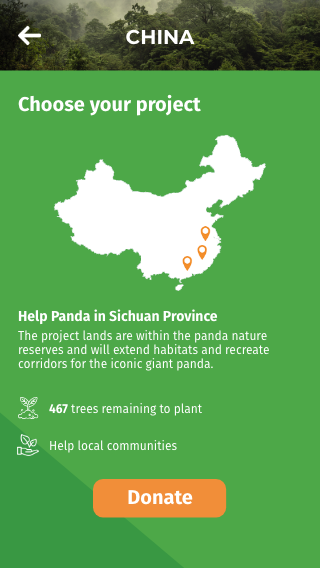
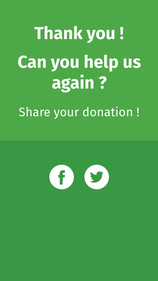
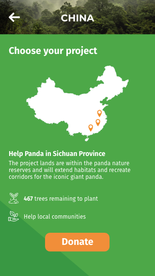
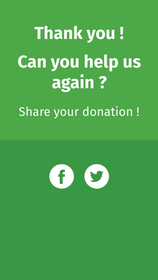

Projet d'étude Plant a billion
Maquette UX /UILe brief client
Nous désirons développer notre visibilité, et refondre notre site internet dédié à l'opération Plant a Billion (https://www.plantabillion.org/). Le site actuel n'est pas assez dynamique, explicatif ni incitatif à l'action, aux dons, et bien que disposant de graphisme de qualité, ne met pas la thématique assez en valeur et ne l'explicite pas suffisemment.
- Nous désirons ainsi une refonte réfléchi de notre site en une seule page qui fusionnerait toutes celles présentes :
- page d'accueil
- les 3 pages localisations
- la page partenaire
La maquette desktop :


L'application
- Nous aimerions une application qui permette aux visiteurs de faire une donation au programme Plant a billion :
- une interface visuellement engageante et intuitive tout en étant élégante et travaillée
- une visualisation du don, et des conséquences de celui-ci, afin que l'usager puisse voir de façon concrète et interactive les actions qui seront menées et où elle le seront
- la possibilité, une fois le don effectué, de partager l'action ensuite sur les réseaux sociaux
 


